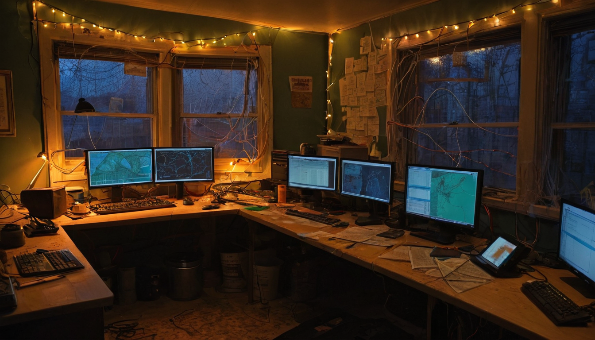

@prplhayeshz posted a single Terence McKenna quote and tagged @digdotnet and @chia_project. Short post. Easy to scroll past. I did not scroll past it.
The quote: "The internet is light at the end of the tunnel. It is creating a global society."
McKenna said things like this before most people had a working email address. The fact that this quote still lands says something worth thinking about.
The post from @prplhayeshz pairs the McKenna quote with two Chia-ecosystem projects: @digdotnet, which is the Dig Network, a decentralized data and content layer built on Chia, and @chia_project, the main Chia Network account. @bytesandblocks, @OrangeGooey, and @SpeechlessZi are also tagged, making this feel like a share within a community already familiar with what these projects are working toward.
The links in the post appear to point to Dig.net and Chia.net. There is no long explanation: the quote is the frame and the tags are the application.
McKenna's "global society" framing was not about convenience. He was describing a shift in how humans organize, communicate, and share meaning across geography. A place where small groups with real ideas can find each other and build together regardless of where they are. Not homogenized culture. Something stranger and more distributed.
That vision still applies. But it has a problem. The internet we actually got is mostly owned by a handful of companies. The tunnel McKenna described has a few people with their hands on the light switches.
This is where Dig and Chia are trying to do something different. Chia is a blockchain built around a more sustainable consensus model called Proof of Space and Time, rather than the energy-heavy Proof of Work that powers most older blockchains. It includes something called the DataLayer, a way of storing and syncing structured data in a decentralized way, with real provenance and no single point of control.
The Dig Network builds on top of that. It is working toward decentralized content distribution: a way to serve web content without relying on centralized hosting infrastructure. A web where the content layer is not owned by the few companies currently serving most of the internet's files. That is a meaningful goal if it can be made to work in practice.
What it does. Dig is working to use Chia's DataLayer as a foundation for decentralized content delivery. Rather than a website existing only because a company is paying a cloud provider to keep it running, content would be hosted across distributed nodes.
Who it helps. Builders who want to publish without depending on centralized infrastructure. Small teams, open source projects, and communities that want their content to stay up even if a major provider has a bad day or a policy change.
What Chia brings. Proof of Space and Time makes Chia's consensus less energy-intensive than Proof of Work alternatives. The DataLayer gives applications a real tool for structured, verifiable, distributed data storage. These are the actual building blocks Dig is working with.
What still needs to prove out. Decentralized content delivery at scale is genuinely hard. Latency, cost, tooling, and developer adoption are all real challenges. The McKenna quote is visionary, but the engineering behind it is still being built.
What to test first. The developer experience. The path to the thing McKenna described runs through builders choosing to build on this stack, and that choice gets easier when the tooling gets easier.
I have a soft spot for posts that pair a decades-old philosophical quote with something being actively built right now. Not because the quote proves anything about the technology, but because it asks the right question: what is this actually for?
It is rare to see a crypto post lead with the question of what the technology is actually for, and this one did. @prplhayeshz did the opposite. The McKenna quote is a reminder that the original promise of the internet was something genuinely interesting, and some people are still trying to build toward it.
Dig and Chia are in that camp as far as I can tell. The DataLayer is real infrastructure. Decentralized content delivery is a real problem worth solving. I am rooting for this to work, and I like seeing the Chia community frame their work this way.
Watch the Dig Network's progress on developer tooling and real deployment use cases. Watch how the Chia ecosystem continues to grow around the DataLayer as more builders find it. The quote will age well or poorly depending on how much the infrastructure behind it matures. Based on what is being built, this is worth following.
Source: X post by @prplhayeshz, https://x.com/i/web/status/2078116392209961138, Retrieved 2026-07-17.
External references: